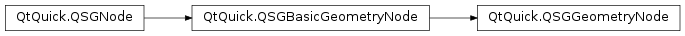

QSGGeometryNode¶
Inherited by: QSGSimpleRectNode, QSGSimpleTextureNode
Synopsis¶
Functions¶
- def
inheritedOpacity() - def
renderOrder() - def
setInheritedOpacity(opacity) - def
setRenderOrder(order)
Detailed Description¶
The
PySide2.QtQuick.QSGGeometryNodeclass is used for all rendered content in the scene graph.The
PySide2.QtQuick.QSGGeometryNodeconsists of geometry and material. The geometry defines the mesh, the vertices and their structure, to be drawn. The Material defines how the shape is filled.The following is a code snippet illustrating how to create a red line using a
PySide2.QtQuick.QSGGeometryNode:QSGGeometry *geometry = new QSGGeometry(QSGGeometry::defaultAttributes_Point2D(), 2); geometry->setDrawingMode(GL_LINES); geometry->setLineWidth(3); geometry->vertexDataAsPoint2D()[0].set(0, 0); geometry->vertexDataAsPoint2D()[1].set(width(), height()); QSGFlatColorMaterial *material = new QSGFlatColorMaterial; material->setColor(QColor(255, 0, 0)); QSGGeometryNode *node = new QSGGeometryNode; node->setGeometry(geometry); node->setFlag(QSGNode::OwnsGeometry); node->setMaterial(material); node->setFlag(QSGNode::OwnsMaterial);A geometry node must have both geometry and a normal material before it is added to the scene graph. When the geometry and materials are changed after the node has been added to the scene graph, the user should also mark them as dirty using
QSGNode.markDirty().The geometry node supports two types of materials, the
opaqueMaterial()and the normal material. TheopaqueMaterial()is used when the accumulated scene graph opacity at the time of rendering is 1. The primary use case is to special case opaque rendering to avoid an extra operation in the fragment shader can have significant performance impact on embedded graphics chips. The opaque material is optional.Note
All classes with QSG prefix should be used solely on the scene graph’s rendering thread. See Scene Graph and Rendering for more information.
See also
PySide2.QtQuick.QSGGeometryQSGMaterialQSGSimpleMaterial
-
class
PySide2.QtQuick.QSGGeometryNode¶ Creates a new geometry node without geometry and material.
-
PySide2.QtQuick.QSGGeometryNode.inheritedOpacity()¶ Return type: PySide2.QtCore.qrealSet during rendering to specify the inherited opacity for that rendering pass.
-
PySide2.QtQuick.QSGGeometryNode.renderOrder()¶ Return type: PySide2.QtCore.intReturns the render order of this geometry node.
-
PySide2.QtQuick.QSGGeometryNode.setInheritedOpacity(opacity)¶ Parameters: opacity – PySide2.QtCore.qrealSets the inherited opacity of this geometry to
opacity.This function is meant to be called by the node preprocessing prior to rendering the tree, so it will not mark the tree as dirty.
-
PySide2.QtQuick.QSGGeometryNode.setRenderOrder(order)¶ Parameters: order – PySide2.QtCore.intSets the render order of this node to be
order.Geometry nodes are rendered in an order that visually looks like low order nodes are rendered prior to high order nodes. For opaque geometry there is little difference as z-testing will handle the discard, but for translucent objects, the rendering should normally be specified in the order of back-to-front.
The default render order is
0.
© 2018 The Qt Company Ltd. Documentation contributions included herein are the copyrights of their respective owners. The documentation provided herein is licensed under the terms of the GNU Free Documentation License version 1.3 as published by the Free Software Foundation. Qt and respective logos are trademarks of The Qt Company Ltd. in Finland and/or other countries worldwide. All other trademarks are property of their respective owners.